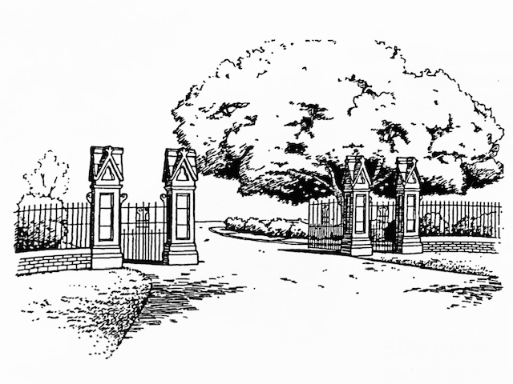
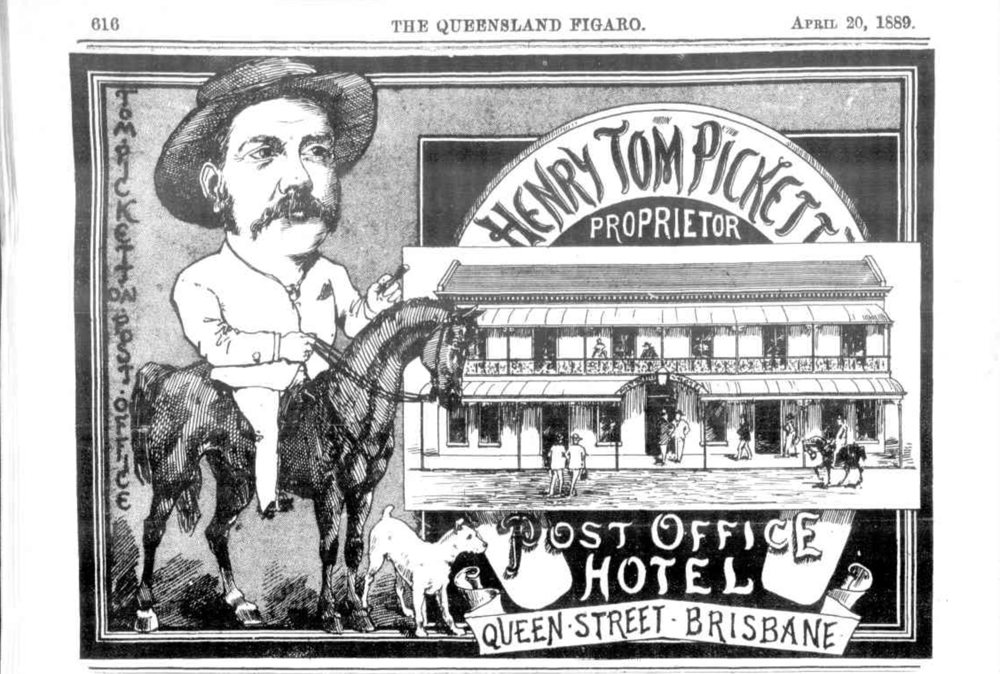
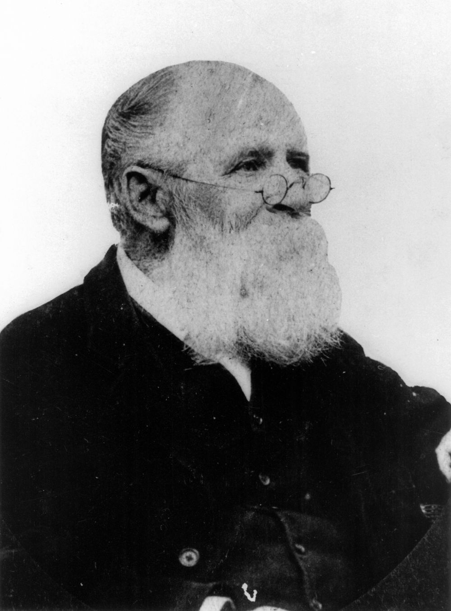
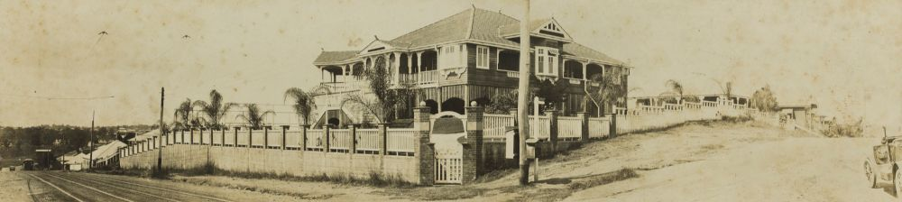
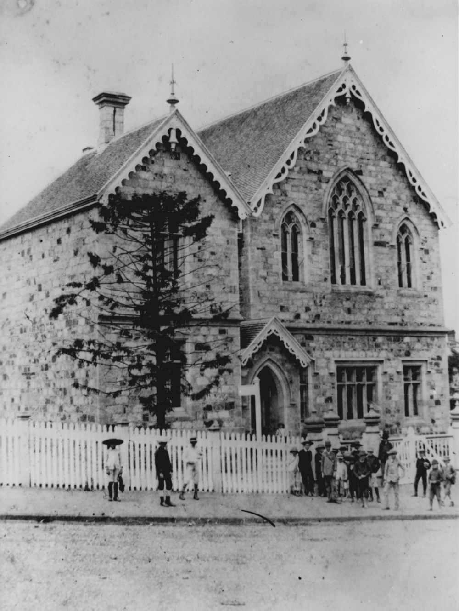
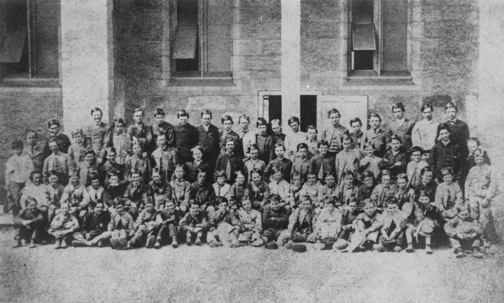
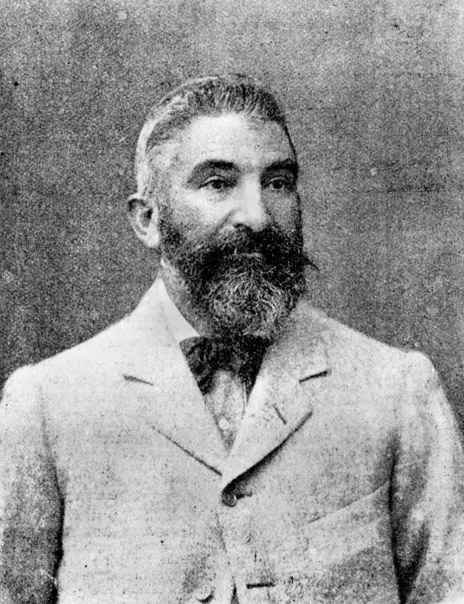
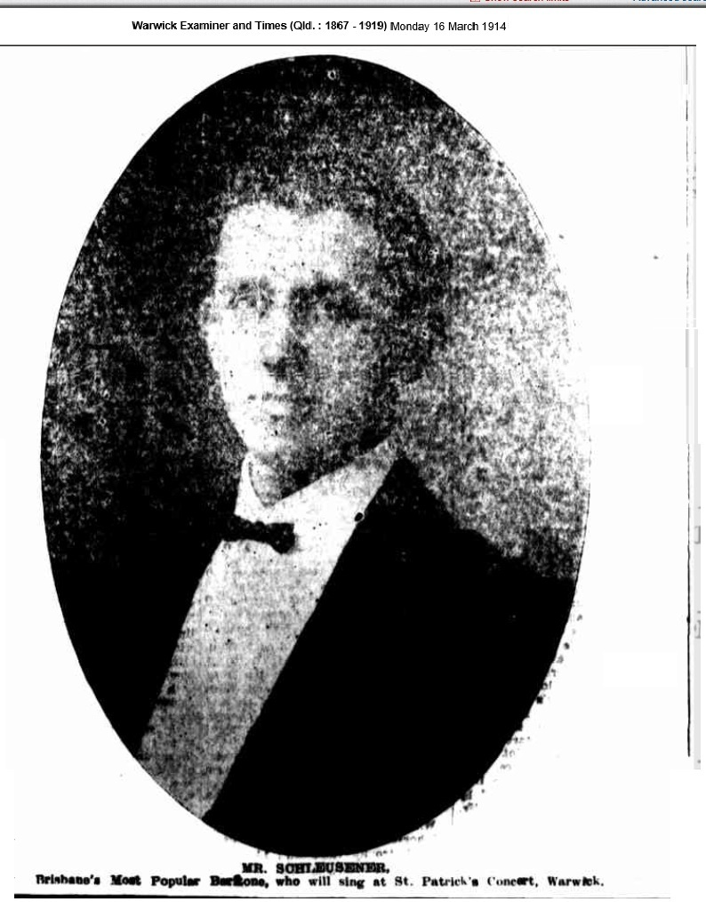

Extraordinary Stories of Ordinary People
Some stories about people interred at Toowong Cemetery
Edited by Hilda MacLean

Drawing of Toowong Cemetery Gates — Jeff Turner.
A web version of the book
This is web version of Extraordinary Stories of Ordinary People, ISBN 0-646-37317-X, available at Brisbane City Council Libraries.
Some corrections have been made. Images may differ from those in the book. Minor formatting changes.
Foreword
Old cemeteries reflect aspects of our social, religious, cultural, architectural and literary history not found in such a combination in any other place. Toowong Cemetery is the largest in Queensland and is an important record of the history of Brisbane and Queensland.
At the end of the convict period the main cemetery was near the northern end of the present William Jolly Bridge. In 1844 the Paddington Cemetery (on the site of the current Suncorp Stadium at Lang Park) came into use. This cemetery quickly became overcrowded. As early as 1853 a petition requesting a new general cemetery was sent to the Government of New South Wales, of which Queensland was then a part.
In June 1866 a site of 203 acres at the base of One Tree Hill (now Mt Coot-tha) about 6 kilometres from the centre of Brisbane was surveyed for a cemetery reserve. This was extended to 257 acres in October 1870.
Queensland's second Governor, Colonel Samuel Blackall, was ill and this prompted him to choose a plot the highest in the cemetery - for his grave. He died in January 1871 and was the first to be buried in the new cemetery. His impressive memorial continues to dominate the hill.
Trustees were appointed to administer the cemetery in October 1871. The inhabitants of Brisbane were reluctant to use the new cemetery because of the lack of public transport and resultant higher funeral costs. In 1875 the railway was extended through to Toowong and the cemetery was officially opened on the 5th of July 1875.
Although Governor Blackall was the first person buried in Toowong Cemetery, several memorials predate his grave. In 1881 the bodies of three children who died in the early 1830s (their fathers were guards in the convict settlement) were exhumed from a North Quay site and, with the original headstones, transferred to Toowong Cemetery. Around 1911 a small number of remains and memorials from the Paddington Cemetery were also removed to Toowong Cemetery.
In 1915 a parcel of 132 acres was transferred to the Toowong Town Council to provide parkland and the proceeds used for the erection of a cemetery wall, iron railing and gates. In 1930 the administration of the cemetery was handed over by the trustees to the newly formed Brisbane City Council.
By April 1975 almost all available plots in Toowong Cemetery had been sold but burials still take place in family graves. More new graves were made available in January 1999.
It is estimated that around 116,000 are buried in Toowong Cemetery. While there is a large amount of information available on a small number of very notable individuals, little is known about the majority of the people buried at Toowong. These are the 'ordinary people'. Every one has an 'extraordinary story'. All contributed in some way to the fabric of our early Queensland society.
Members of the public, including descendants, have provided these stories with the aim of letting the contributions of these individuals be known.
While every care has been taken in checking the accuracy of the contributions, many are stories passed down through the generations, and are unable to be substantiated. In any case, the stories are fascinating reading.
Photographs have been supplied by the contributors. Sources are acknowledged where known.
The Friends of Toowong Cemetery Association Inc. would like to sincerely thank all of the contributors for sharing their 'Extraordinary Stories'.
This publication is the first of a series. Further volumes will be published progressively as contributions are received.
The cover drawing is one of a series by Jeff Turner, funded by a Brisbane City Council Cultural Grant.
Publication of this book was made possible through a Brisbane City Council Local History Grant.
Hilda Maclean
Honorary Secretary
Friends of Toowong Cemetery
April 1999
Agnes Susan MacLean (5‑107‑19)
Susannah Agnes Kable, as she was christened, was the grand-daughter of First Fleet convicts Henry Kable and Susannah Holmes and Second Fleet marine William Charlton and convict Mary Gittos. Born in Bathurst, Susannah was the eldest of six children. Susannah's father, William Nathaniel Kable, died when she was eleven. Her mother, Elizabeth, remarried and with her new husband, Matthew Smith Finley, had another five children.
When Susannah was about six and living in Bathurst, her mother Elizabeth went one night to investigate an intruder in their house. An escaped convict was hiding in the bedroom. Taking the only weapon at hand, a small cobbler's hammer, Elizabeth levelled it at the intruder as if it was a pistol, saying "If you move, I'll fire." While covering the man with the hammer, she managed to attract the attention of a household servant. When the escapee found that he had been taken by a woman with a hammer, he vowed vengeance. The family lived in fear of his escaping again until he was sent to Cockatoo Island for a lengthy sentence.
When Susannah was 19, she married John Shand Maclean, the son of a Equity Court judge in Jamaica. John had arrived in Australia seven years earlier in 1838. The first of Susannah's ten children was born in 1847. Susannah followed her husband around as he pursued his various interests. John attempted farming and for a time taught at a gentlemen's academy in the Richmond area of New South she gave Wales.
Susannah was in Bathurst in 1853, where she gave birth to her third son. By 1856, where the ever-growing family had settled in the Burnett region of Queensland. Susannah's final four children were born on various cattle properties in the Burnett region.
Susannah struggled to raise her growing family with only the occasional help of indifferent servants. She was often left alone in the unlined slab house. At times Susannah would see eyes peering at her through the cracks. To ward them off, she would take a firearm from the rack and handle it as if she was about to use it. Her ruse appeared to have worked.
Tragedy struck in November 1862 when John fell off a horse and died on Gyandrah Station near Cracow, Queensland. Susannah was left with ten children under the age of fifteen and a cattle property to manage. She suffered another setback in the 1870s when a fire swept through Gyandrah, destroying all her photographs and heirlooms.
Susannah brought up her large family with the assistance of her brother and sister-in-law on a nearby property. The children learnt to swim in the Dawson River and reputedly all became expert riders.
In 1884 Susannah's youngest child, Eric, married sixteen-year-old Elizabeth Penhallurick at her residence at Westwood, via Rockhampton. From about this time, Mrs Agnes Maclean, as she became known, developed a reputation as a midwife, delivering many children in district, including a number of her own grandchildren. In October 1893, Agnes delivered Elizabeth's second son at Westwood. While Eric and Elizabeth had moved north to Bowen by 1895, it seems that Agnes moved south.
Agnes claimed the right to vote in 1905, her 80th year. She was registered on the electoral rolls as living with her youngest daughter, Elvina, and her schoolmaster husband, Charles Marshall, at the Nerang State School.
Agnes died of nephritis at the Nerang Hospital on the 20th of January 1911. She was buried at Toowong Cemetery next to her sister-in-law, Mary Ann Kable.
The grave of Agnes Susan Maclean was restored in 1998 with funds provided by the Kable family.
Acknowledgement
This story was contributed by Wendy O'Brien.
Jessie Massey (18‑116‑8)
The ninth and youngest child of James Hall-Scott and Sarah Ross, Jessie was born at Ross Hall, Bowen on the 5th of March 1874. Jessie, and her five sisters and her brother were taken to Scotland in 1875 by their mother. Sarah intended to educate the children in Scotland and on the Continent. For a time, the family stayed with the Ross family on the farm Kinnahaird, near Contin in Ross-shire.
Jessie and her family left Scotland as a consequence of the premature death of her father, James Hall-Scott, in 1880. The family did not manage to return to Bowen until 1882, only to find that their property had been completely destroyed by a cyclone. They were forced to live several weeks under canvas while a dwelling was built for them. Jessie stayed in the Bowen area at least until 1888, helping her widowed mother to run the small farm they had. Jessie went to Toowoomba in 1892 but had returned to Bowen by May 1893.
On the 15th of March 1897 at the Holy Trinity Church, Bowen, Jessie married Glenville Massy, sixth son of Charles Alphonse Massy of Stoneville, Gundaroo, New South Wales. Jessie's eldest sister Annie had married Glenville's younger brother, John Eyre Massy, seven years earlier. Now the families were doubly connected.
Jessie gave birth to two children, Marie Stuart in December 1897 and Glenville in March 1901.
Within a year of her marriage Jessie had moved to Thursday Island, where her husband had an interest in a meat-freezing works. She was still on Thursday Island in September 1909.
Shortly afterwards, in prosperous circumstances, the family moved to Brisbane. They built a house called Glenville, which stood on the corner of Hobbs Street and Milton Road, Auchenflower, Brisbane. Jessie was an expert wood carver and made many pieces for her home.
Jessie also travelled extensively. She brought back many souvenirs from Japan, which are still in the family. When she made a trip in 1904, Japan was not often visited by Westerners and the war between Japan and Russia had just ended.
Jessie suffered many sorrows during her life. Her sisters Annie, Marion and Ada died within eight years of each other, Annie of a stomach tumor and the others of tuberculosis. None was over the age of forty. Jessie herself died on the 27th of May 1923 aged 49. She is buried at Toowong Cemetery with her husband, Glenville, and daughter, Marie.
Matthew J. Fox wrote this about Jessie in his book The History of in Queensland: its people and industries, published 1921.
Mrs Massy shared with her husband the many privations and sacrifies of life in the Never-Never, gladly separating herself from the accustomed luxuries of civilisation in order to uphold him in the uphill struggle by that cheerful and loving support which may only be accorded by loyal womanhood.
Acknowledgement
This story was contributed by Hilda Maclean.
Catherine Greasley (7A‑43‑16)
Catherine Ryan was born about 1853 in Dublin, Ireland to Patrick and Mary Ann Ryan. Her parents died in a railway accident when she was about two years of age. Catherine and her sister Mary Ann were adopted by the Dovey Family and emigrated to Australia with them. They lived in Melbourne and Catherine was confirmed at St Mary's Roman Catholic Church at the age of ten.
Catherine moved to Queensland and married Martin Walsh on the 8th of January 1877 at Maryborough. This was Martin's second marriage; he had two children from his previous marriage. Catherine and Martin had five children of their own and they reared the seven children together until Martin died on the 26th July 1886 at Tinana. He was buried at Maryborough.
Catherine remarried when she was 44. She and her husband, John Greasley, had a son. After John died on the 23rd of September 1903, Catherine ran a boarding house at Spring Hill. Her daughter, Evangeline Mary Walsh, was a waitress there when she married Joseph Campbell. Evangeline and Joseph Campbell had six children, three girls and three boys. On the 11th of December 1923 Joseph died at their home at Mott Street, Enoggera. Three days later one of their daughters, Esther, also died. Evangeline died on the 14th of October 1924. Joseph, Esther and Evangeline are buried in the same grave in Toowong Cemetery.
After Evangeline's death Catherine took over the raising of Joseph and Evangeline's children, her own grandchildren. Catherine was about 71 at this time. She was a good organiser and grew her own flowers, vegetables and particularly herbs, from which she concocted her own medicines and ointments. She kept the family on ten shillings a week, which she supplemented by making jams and lollies and by crocheting and tatting for Brisbane City shops such as Allan and Stark, and Edwards and Lamb. She made all of her family's clothes.
The family lived in a big old Queenslander. There was no electricity. They used hurricane lamps hanging from the ceiling. The water was heated in a copper before being carried up stairs for baths taken in a big two handled galvanised tub. Soap was cut up for washing and the clothes were scrubbed on a board before they were put in a copper boiler and kerosene tins to boil. Ironing was done with 'Mrs Potts' irons heated on a wooded stove. All the cooking was done in iron saucepans.
On the 9th of February 1929 Jean Millicent Campbell died and was buried in Toowong Cemetery. With her death only one of Catherine's three granddaughters was now alive.
Catherine Greasley died on the 26th of August 1935 and was buried in the same grave as Jean. Catherine Greasley was a remarkable woman who raised not only her stepchildren and her own children from two marriages but also her grandchildren.
Acknowledgement
This story was contributed by Ian Campbell.
Emily Sophia Pickett (21‑1‑55)
Henry Tom Pickett (21‑2‑31)
Died 21 May 1927
Emily was born Emily Sophia Leader on the 4th of July 1857 in Marlborough, Wiltshire, England, where her father Richard Leader owned the Sun Inn. Emily was married to Henry Tom Pickett on the 12th of March 1878 at St Peters and St Pauls, Marlborough and left for Australia soon after. Henry must have been to Australia before as he is listed as hotelkeeper of the Steam Packet Hotel, Cairns in 1870. The account of the marriage in the Marlborough Times describes "Tom" as "being late of Leichhardt Hotel, Cairns."
Their first child, Emily Margaret, was born on the 8th of March 1879 at the Kelly Building in Elizabeth Street, Brisbane. Tom and Emily had five other children. Eleanor Sarah was born on the 26th of November 1880 at the Union Club in Charlotte Street. Another daughter, Evelyn Ann, was also born at the Union Club on the 20th of January 1882. Evelyn died on the 13th of April 1882 and is buried with her mother at Toowong. Emily Sophia went back to England about 1883 because her father died that year.
The next child, Dorothy Kemp Pickett, was born on the 12th of March 1897 at the Post Office Hotel. Frank Burgess Pickett was also born there on the 17th of November 1898. Henry Tom Pickett was proprietor of the Post Office Hotel, which was in Queen Street opposite Eagle Lane, from the 8th of September 1885 to 1900. They had water up to the ground-floor ceiling during the great 1893 flood. The hotel was in Queen Street, Brisbane opposite Eagle Lane. Tom moved to the Metropole Hotel, 78 Edward Street, as proprietor in 1901-1902. Marjorie Leader Pickett was born at Fairview Guesthouse in Sandgate on the 17th of May 1901. The family story goes that Emily Sophia Pickett travelled down to Sandgate every Friday and stayed the weekend. The 1903 Post Office Directory listed the family at Savernake, Kedron Park Road, Lutwyche. The house was so named because Tom Pickett was born near this area in Wiltshire.
Emily Sophia ran boarding houses in her later years. The first was the Strathmore on North Quay. Then, in 1915, she took over and refurbished the Fairview at Sandgate.
Emily Sophia died on the 19th of December 1923 at Kent Road, Wooloowin. Henry Tom was admitted to Dunwich Asylum in early November 1925 and died there on the 21st of May 1927, his body being taken by launch to Cleveland. He is buried at Toowong with his brother Frank.
Redael the name of the family home in Kent Road Wooloowin, is 'Leader' (Emily's maiden name) spelt backwards.

This advertisement appeared in The Queensland Figaro on the 20th of April 1889.
Acknowledgement
This story was contributed by Pamela Webster.
Walter Issac Jenner (5‑43‑16)
Walter Jenner was born on the 8th of March 1836 in Godalming, Surrey, England. In 1854 he joined the Navy, retiring from it in 1865. He tried various jobs and at age 29 settled in Brighton and started to paint. He became quite well known, exhibiting at the English and Scottish Academies, the Royal Pavilion Gallery, Brighton and the Crystal Palace, London.
On the 31st of July 1883, aged 47, he left with his family for Queensland on the RMS Roma. They first lived at Dornoch Terrace, Highgate Hill and later in Montrose Street, Taringa. In 1884, only a year after arriving in Brisbane, he exhibited at the Queensland National Association. Subsequently he won prizes and medals interstate and at the Colonial and Indian Exhibition in London. Soon after his arrival in Brisbane, Walter initiated meetings to discuss the founding of a Queensland Art Society. The QAS was then formally inaugurated at the School of Arts, Ann Street, on the 4th of August 1887.
Walter then proposed the founding of a public art gallery in Queensland and led a deputation to the Premier to that end. After much lobbying the Queensland National Art Gallery (as it was then known) was established by the Government in March 1895. Jenner continued to paint and exhibit until ill health prevented him from working. He died on the 1st of March 1902.
The prominent part Jenner played in art matters is recognised in the catalogue of the Gallery Collection of 1908 and again in the Gallery's 1982 Commemorative Catalogue. A retrospective exhibition of Jenner's work was held late in 1994. The exhibition drew heavily on works owned by Jenner's great-granddaughter and works from the collection of the Queensland Art Gallery.

Noted Queensland artist Isaac Walter Jenner — State Library of Queensland.
Acknowledgement
This story was contributed by Frances Pavlu.
Glenville Massy (18‑116‑8)
Glenville Massy J.P. was born on the 13th of May 1863. He was the third surviving son of Charles Alphonse Massy, who had four sons and two daughters, all of whom were born at Gundaroo, New South Wales.
Glenville was educated at the Collegiate School, Glebe Point, Sydney, where he studied until he turned seventeen. Owing to an indifferent state of health he did not immediately engage in any particular occupation.
A year later, in 1881, he came to Queensland to join his brothers, Charles and Oscar, at Sonoma, a cattle property owned by them near Bowen. He remained on Sonoma for about a year, when, with Charles, he started with a 1000 head of breeders with the view of taking up land on the Lynd, a river which junctions with the Mitchell. On their arrival, however, they learned that the country had already been selected. Their next thought was to obtain pasture for their herd during the advancing wet season.
Glenville stayed with the cattle while Charles inspected down the Mitchell and Palmer Rivers and over the Straaten River Valley, becoming familiar with the the country and potential for grazing. When the roads were again traversable, the brothers mustered their stock and continued their journey to the far north, eventually arriving at the Stuart River, where they took up country 1200 kilometres from where they had started. This land was now known as Silver Plains. Its ownership passed to the Queensland Government after the Massys abandoned it when they acquired better country to the west-north-west and moved their stock there. To this property, Rokeby, they devoted many strenuous years. Living 160 kilometres from their nearest neighbour, lacking postal and telegraphic facilities, their only means of procuring stores was by packhorse from Cooktown, a distance of 360 kilometres, at a cost of £35 per ton. They sturdily faced floods and droughts and the many indescribable hardships accompanying such events. There was practically no market for their stock and for several years it was impossible to obtain credit from financial institutions.
The Aboriginals constantly killed and harassed the stock and menaced the lives of the settlers. In the efforts of the brothers to halt the attacks by dispersing the Aboriginals, Charles was wounded by a barbed spear which entered his back and became embedded. Glenville helped his older brother to travel over 190 kilometres, but shortly after reaching medical aid Charles died of exhaustion.
Oscar joined Glenville at Rokeby. To make it cheaper and quicker to bring in supplies, the Massy brothers pushed a road through to the mouth of the Stuart River. Stores were then transported by sea from Cooktown and then by pack horse at the much reduced rate of £10 per ton. The Queensland Government also used the road for forwarding supplies when building the overland telegraph line to Cape York.
When by 1895 it was imperative to find a market for their increasing herd, Glenville moved to Thursday Island and established a butchering business, which he conducted on his own for the following 14 years as a means of absorbing the Rokeby stock. Then the butchering business was floated into a limited company with the title of "The Torres Straits Fresh Food and Ice Company", in which Glenville retained an interest for several years.
In the meantime the firm acquired Emu Plains, a run adjoining the original Sonoma property. The Massy brothers mutually decided to dissolve the partnership in 1910, Glenville becoming the sole owner of Rokeby and Emu Plains while retaining an interest in Sonoma, which was then administered by Oscar.
That year Glenville Massy retired from North Queensland and took up residence at Glenville, on the corner of Milton Road and Hobbs Street, Auchenflower. The house, described as one of the most fashionable of its time, is no longer standing. Glenville spent his days amid comforts which vividly contrast with the frequent privations - such as scarcity of water and lack of food for days at a time - and the many other hardships incidental to a life in the Peninsula.
He married Jessie, daughter of James Hall-Scott, a pioneer of the Bowen district in 1897. Jessie's story is told elsewhere in this book. Glenville died on the 25th of March 1939 at his beloved Auchenflower home.

5657 Panorama of a large Queenslander house on the corner of Milton Road and Hobbs Street, Auchenflower. ca. 1920. Part of a motorcar can be seen at the far right of the photo and tram lines and a tram are shown at far left. The house is timber, with a brick and timber fence. The house, named '*Glenville' was the residence of pastoralist Glenville Massy and his family. The house was demolished in the 1960s. — State Library of Queensland.*
Acknowledgement
This story was contributed by Hilda Maclean.
Michael Fryar Shield (18‑8‑24)
Mary Ann Shield (18‑8‑24)
Albert Shield (29A‑67‑9)
Michel Fryar Shield was born in England. He came to Australia with his parents and siblings from Newcastle-Upon-Tyne on the ship Stamboul in 1854. They settled in Moggill and were very early colonists there. He moved to Brookfield and married his first cousin, Mary Ann Makepeace. They raised twelve children. He never remarried after Mary Ann's death in 1905 aged 53. Michel died on the 5th of August 1935 aged 84 years.
Mary Ann's parents, Thomas Tindale Makepeace and his wife Hannah Fryar, migrated from Gosforth, Newcastle, England and arrived in Australia in 1857. After settling initially in Newcastle, the family moved to Moggill, where her father work in the Redbank Mines. A serious accident resulting in the amputation of a leg forced Thomas to take up farming at Moggill. Thomas was a foundation member of the Moggill Methodist Church (now the Wesleyan Church).
Albert Shield was the son of Michel and Mary Ann Shield. He was a surveyor and a teacher and taught at the old Normal School in Brisbane. He was the first teacher at the Kuala Lumpur Survey School. He became the Administrator of the Malay States. He had 12 servants but he was single. He became very ill with malaria when he was there and returned to Australia a very sick man. Albert died on the 15th of January 1936 aged 41 years.
Acknowledgement
This story was contributed by M. Kelly.
Mary Craig Atkinson (1‑49‑16)
Mary Cochrane was the third daughter of Thomas Cochrane, a ploughman, who married Agatha Butter in Edinburgh in 1844. Seven children were born to the family in Dundee. On the 12th of January 1856 Mary arrived with her family in Queensland. Her father, Thomas, ran a grocery store in Fortescue Street, Spring Hill. Five more children were born in Brisbane.
Mary Cochrane married merchant Robert Jackson Craig in 1865. He and his bothers-in-law Samuel and William Cochrane and their families travelled north to the new port of Cairns. By March 1877, the men had established themselves as merchants at Smithfield.
On Boxing Day 1877, Robert was tragically murdered by the owner of the Bee Hive Hotel, William Smith, who then took his own life. Smith's hotel was opposite Robert's store. Robert had asked Bill Smith to settle his outstanding account and refused him further credit until the debt was paid. About 2 o'clock in the afternoon, Bill Smith called Robert Craig over to 'settle' his account. Afterwards gunshots were heard and Robert ran into the street clutching his chest shouting "Murder! Murder!" William Cochrane was working behind the counter of their store and ran outside when he heard the shots fired. He saw Bill Smith standing on the verandah of his hotel with the revolver still in his hand. William towards Bill who quickly turned the revolver on himself. Robert Craig died in his brother-in-law's arms. He was just 34 years old. Robert was the first burial in the Cairns Cemetery on the Esplanade.
The loss of two well-respected citizens stunned the whole community of Smithfield. Robert and Bill Smith had always been the best of friends. The town of Smithfield had been named after Bill Smith, who had hacked a track through the jungle to the Hodgkinson Goldfields in 1876.
Mary was in Brisbane at the time of Robert's tragic death, expecting their sixth child. A son was born the following July, but only lived two months. Two more of their sons had also died in infancy. She did not remarry until nine years later. Although Robert's life insurance payments had lapsed, the Australian Mutual Provident Society made a gift of £400 to Mary so she was secure financially.
Life was not uneventful, however. Her son Fred was only four when his father died and would have had little memory of him, but perhaps family stories of Cairns stirred his curiosity. An item in the Cairns Courier on the 13th of May 1881 reports that Fred ran away, boarded the Leichhardt on route to Cairns, was apprehended by the police at Rockhampton and returned to Brisbane. This happened just before his eighth birthday.
In 1886 Mary married Paul Cole Atkinson, a widower with five children. By this time Mary's three surviving children were teenagers. She had two more children, Pauline and Ruby, making a total of seven children for her to care for. However, fate was not kind to Mary. All she had been through obviously affected her health and she died just seven years later in October 1893 at the early age of 45. Ruby was just five years old. A series of housekeepers raised Mary's children until Paul Atkinson married for the third time in 1898 to Eliza Hendren. Mary is buried in the Atkinson family grave.
Acknowledgement
This story was contributed by June Vickers.
Silvester Diggles (13‑6‑10/11)
Silvester Diggles and his family migrated from Liverpool, England to Sydney. Eventually, the family settled in Brisbane in 1854. Silvester was a man of many and varied talents. He was a piano tuner, musician and artist. He also was Brisbane's first known photographer in 1855. Silvester also distinguished himself as an ornithologist, entomologist and astronomer, just to name a few more of his interests.
Silvester was selected by the government of the day to proceed to Cape Sidmouth in 1871 as a member of the Eclipse Expedition, his chief recommendation being his skills as an artist and naturalist. He also was one of the most earnest advocates for the establishment of a museum in Queensland. During his lifetime, Silvester published Ornithology of Australia, the first volume of what was meant to be a multi-volume set. He died before the second volume was completed.
As well as being an esteemed member of the Queensland Philosophical Society for many years, Silvester was a member of the order of Freemasons, and for some time filled the position of organist to St Patrick's Lodge.
Silvester Diggles died on the 21st of March 1880 aged 63 years and 2 months, leaving behind a widow, two sons and two daughters. As was the custom of the day, the funeral cortege left the family home at Kangaroo Point, proceeding via the Victoria Bridge to Toowong Cemetery for the funeral.
Acknowledgement
This story was contributed by Dr Rod Fisher.
Note the headstone has been removed.
John T. S. Bird (5‑30‑9A)
John T. S. Bird was born on the 10th of May 1842 in Buckland Brewer, Devon. He was entered in the birth register as Zephenneh Theopilus Symons Bird and was known as Jephunneh for some time. In Australia he was always known as John or 'J. T. S.' Bird.
John began working with the Rockhampton Morning Bulletin newspaper on the day after his arrival in June 1863. He was one of the 457 English and Irish migrants to arrive in Rockhampton aboard the ship Beejapore. Although a qualified printer, he spent some years seeking gold, mostly in central Queensland. He was the co-discoverer, with Arthur Hoskings, of the Ridgelands alluvial goldfields near Rockhampton in 1867. A year later he married Kezia Seymour. By 1870, with his wife and daughter Ella, he was invited back onto the Morning Bulletin staff and served in various capacities during his long career.
Kezia gained some fame by providing the first clue in the arrest of Commissioner Griffin for the murder of Troopers Power and Bird during a gold shipment robbery in 1869.
Originally on the mechanical printing staff, John was appointed foreman in 1875 and later became overseer. By 1876 he was writing very popular sporting articles under the name 'Veno', and because of his practical mining experience he became the mining reporter. The newspaper was the first to describe Queensland's famous Mount Morgan mine. He was Rockhampton's first historian, and his articles on the early days and notable people were collected and published by the Morning Bulletin in 1904 as The Early History of Rockhampton by J. T. S. Bird. This is now a rare volume and is accepted as being one of the best of its genre.
Two of John's sons, Robert and John, followed their father into the newspaper business. At one stage the entire family was on the staff, and they claimed that, if necessary, they could produce the whole paper.
In 1909 he was appointed sub-editor of the Capricornian and continued on the literary staff of these newspapers until his wife's death in 1918, when he moved to Brisbane. Even from there he wrote freelance articles for the Rockhampton Bulletin until about six months before his death on the 7th of May 1932, just three days short of his 90th birthday. Rockhampton honoured him by naming a street, Bird Court and a park after him.
John and Kezia had a total of eight children, some of whom are buried at Toowong Cemetery. His eldest child, Ella, who looked after John until her death in 1928, is buried in the family plot along with her brother John T. H. Bird who became the chief Hansard reporter for the Queensland Parliament. J. T. S. Bird's sixth child, Beatrice Kezia, is buried alongside her husband, James T. Wiley, who was tragically killed in an Ascot house fire in 1952. Beatrice raised the orphaned children of her sister Violet. Violet had died prematurely in 1918 and her husband, Ernest Moulday, succumbed to influenza during the great epidemic of 1919.
Acknowledgement
This story was contributed by Dottie Kemp.
James Campbell (12‑15‑4)
4 November 1838 - 13 September 1925
Sarah Ann Campbell (12‑15‑4)
March 1845 - 20 July 1935
James Campbell was born on the 4th of November 1838 at Newtown, Cooks River, Sydney, New South Wales. He was baptised on the 22nd of December 1838 at Scots Church of St Andrew, Sydney. James was the fifth child and fourth son of Hugh and Ellen Campbell.
James left Sydney with his brothers Charles and William to make their home in Toowoomba. He was first connected with Eton Vale. In 1867 he went into business for himself, later taking his two brothers into partnership in the butchery and wool scouring business of J. C. and W. Campbell, situated on the corner of Ruthven and Russell Streets, Toowoomba.
James was interested in politics like his father Hugh and his brother Charles. He became Alderman of Toowoomba, Mayor in 1882, and finally MLA for Aubigny from March 1884 to April 1893, elected unopposed after the election of the 6th of March 1883 was declared null and void. He was also a member of the Toowoomba Caledonian Building Society and foundation member of the Southern Cross Masonic Lodge.
He owned a grazing property, Dulacca West, near Yeulba in 1899. He was said to be an accomplished cattleman. He retired to his home Portland at Toowoomba and his other home also called Portland in Brisbane in 1915.
It was James Campbell's proud boast that he had been a subscriber of the Brisbane Courier for 55 years.
James married Sarah Ann Lovell on the 17th of April 1866 at Toowoomba. Sarah hailed from Bristol, where she was born in March 1845. She came to Australia with her parents on the Blenheim in 1858. The Lovell family first settled in Ipswich then later moved to Toowoomba. Sarah's father, Richard Lovell, was a wheelwright and prominent citizen of Toowoomba. Her mother, Ann, was a member of the Gregory family.
James died on the 13th of September 1925 at his Brisbane home of jaw cancer. Sarah died almost ten years later on the 20th of July 1935 at their Toowoomba home. They are buried together at Toowong Cemetery.
James and Sarah had twelve children, four sons, seven daughters and a baby who died unnamed. At the time of his death in 1925, James had 33 grandchildren and five great-grandchildren.

James Campbell — State Library of Queensland.
Acknowledgement
This story was contributed by Ian Campbell.
Mary Kennedy (1‑4‑11/12)
Andrew Kennedy (1‑19‑3)
Doris Vivian Kennedy (1‑50‑11A)
Mary was a school teacher before and after four her marriage to Samuel Kennedy. Together they had four children, three daughters and a son they named Andrew. Mary was widowed when Andrew was only eight months old. She was living and working at the Drumbie School near Armagh, Ireland. The family emigrated to Brisbane in 1865 and moved into a property in Isaac Street, Spring Hill. Mary died aged 65 on the 5th of August 1885.
Andrew also became a teacher, starting as a pupil-teacher in 1870 and retiring as the Acting Under Secretary of the Department of Public Instruction in 1922. He married Anna Katherine Gripp in 1880 and the couple had ten children. The family lived at Kingsholm at New Farm where Andrew died on the 22nd of February 1930 aged 72.
Teaching was in the Kennedy family blood. Andrew and Anna's youngest child, Doris Vivian, was born at Kingsholm in 1899. Doris graduated from the University of Queensland with a Bachelor of Arts in 1920. She taught at Brisbane Girls Grammar School for 42 years. Doris died on the 28th of September 1979 aged 80.
Acknowledgement
This story was contributed by Ian Kennedy.
Florence Griffiths Buchanan (11‑33‑4)
Florence Griffiths Buchanan was born on the 16th of September 1861 at Barton Fields, Canterbury, England, the youngest of the six children of Captain Neil Griffiths Buchanan of the 93rd Highlanders. In 1882 she came out to join her brother in Bundaberg. She became interested in the missionary work done among the South Sea Islanders. She returned to England in the following year, but, finding the weather too cold, lived in Malta and then Egypt. Florence returned to Bundaberg in 1877 and at once resumed her work among the Islanders on her brother's plantation and elsewhere. Florence suffered a horrific riding accident which left her crippled and subject to terrible pain and headaches for the rest of her life.
Florence left Bundaberg after the great flood of 1893, where she had to be rescued from her submerged cottage. She arrived on Thursday Island where she started worked for the church. This would be her vocation for 19 years until her death in 1913.
On the 5th of January 1908, Florence was ordained Deaconess by the Anglican Bishop of Carpentaria and later that year was in charge of the newly established mission in Moa during the Bishop's absence. Florence worked as a teacher as well as carrying out her duties as superintendent for three years. Despite her physical difficulties, Florence would walk great distances to assist those in need.
Fearing that to the this was getting of too much for her as her, the Bishop lent to the Diocese of Singapore as a temporary helper. On her return to Darwin, Florence again worked as a teacher.
A very modest woman, Florence always dressed in the plainest of uniforms. She was noted for her self sacrifice, a cup of tea and a slice of toast being her usual meal. Florence was much loved by the children she taught and the parishioners of the North.
Florence was in Brisbane attending the Church Congress when she became ill for the last time. She died aged 53 after a terribly painful lingering illness. The inscription on her headstone reads
Well Done Good and Faithful Servant.
Acknowledgement
This story was contributed by Patrica Ramsay.
Anders Peter Petersen-Neilsen (9‑7‑7)
Emma Christina Petersen-Neilsen (9‑7‑7)
Anders Peter Petersen-Neilsen and his wife, Emma Christina, were both born in 1842 in Tjorn, about 45 kilometres north of Goteborg in Sweden. They both came from farming families and are believed to have married in Goteborg on the 7th of January 1870. A son, Carl, was born to them in Sweden later that year.
The 1870s were a time of acute distress in Sweden as the result of overpopulation and poor farm production and during that period almost one million people emigrated. Most went to the USA but quite a number came to Australia.
In October 1872, Anders, Emma and toddler Carl departed from Sweden and sailed for Queensland in the ship Lammershagen.
The Lammershagen was a German immigrant ship which sailed from Hamburg with a migrant complement of 112 married adults, 116 single males, 76 single females and 67 children. The passengers were principally Swedish, Danish, Norwegian and German farming people, most of whom were assisted migrants whose fares were either subsidised or fully paid for by the Queensland Colonial Government.
The voyage to Australia was a long and bitter experience. In line with the practice of the times, each passenger was allowed a ration of very basic food daily and it was a requirement that each bring several changes of clothing as laundering was permitted only at ports of call during the trip. Thirteen passengers died and 17 children were born during the voyage. Young Carl was one of those who died. He was buried at sea.
On arrival in Australian waters, an outbreak of typhoid occurred among the passengers and crew, which resulted in the ship being placed in quarantine at Peel Island, Moreton Bay on the 9th of January, 1873. It was during the quarantine period that a second child, Anna Caroline, was born on the 21st of January 1873. The ship was finally allowed to berth in the Port of Brisbane on the 12th of February 1873 and the migrant passengers were placed in a hostel at Kangaroo Point, where the family stayed for several weeks.
Anders first worked for wages on a farm at Bald Hills and then went to a farm owned by a Mr Robinson on the South Pine River. It was on this farm that the Aboriginals helped them strip bark from trees to roof their house and cow bails. Quite often the Aboriginals came to the house for tobacco and flour. Later Anders leased a small farm in an area bounded by Albany Creek Road,wherehe ran the first cattle he owned. In 1889 he leased a further 37 acres situated on the South Pine River at Cash's Crossing.
In those times, about once per month the family harnessed the sulky or their wagon and drove into the city of Brisbane with dressed pigs and calves for sale to an Adelaide Street butcher and produce which was sold at the markets which then stood in Roma Street.
Anders purchased a farm at Samford in October 1893. The area consisted of approximately 120 hectares. He borrowed about a third of the purchase price. By now, eleven children had been born to the family of whom nine survived infancy. The family initially lived in a slab hut but in 1900 a new house was built, financed by the sale of some of the land.
While the farm was only 24 kilometres from Brisbane, trips to town by sulky or wagon were somewhat of an expedition, entailing a 3am start and a return late at night. Occasionally an overnight stay at a city boarding house was necessary.
Anders and Emma were pillars of the local Methodist church, subscribing to have a new church built about 100 metres from their home. The church was known as the Cedar Creek Methodist Church. The parson would drive his sulky there from Enoggera. The parson would stay the weekend with the Petersen-Neilsens while he conducted services in the church and visited the local parishioners. After Anders and Emma retired to Brisbane, the farm passed into the hands of their son. The weekend visits of the parson to the farm did not thrill the younger members of the family to the same extent and eventually Frederick gave rather generously to have the church removed to Samford township.
When Anders sold the farm to Frederick on the 4th of May 1915, he and Emma were 72. They moved to Paddington, next door to their daughter Emily. Emma died at the age of 82 years on the 27th of January 1925 and Anders died on the 10th of May 1928 aged 85.
Acknowledgement
This story was contributed by Gordon Neilson.
Joseph Needham Scrope Shrapnel (1‑68‑14/15)
Joseph Needham Scrope Shrapnel migrated from England in 1870 on the ship Beaumaris Castle with a lady whom family members long believed to be his wife. Esther Voyce was in fact his housekeeper. Joseph left a wife and four children in England and presumably left for the colonies with the love of his life, seeking a fresh start. With Esther, Joseph had three more children, two of whom are buried with him.
Joseph was a surgeon who had two practices, one at Sandgate and the other in Tank Street in Brisbane City. While riding to the Sandgate Station, Joseph fell from his horse, breaking his leg. He subsequently contracted pneumonia and died aged 47. Esther, his 'wife' was eventually buried beside him.
Joseph Shrapnel bore a famous name. He was the grandson of Lieutenant General Henry Shrapnel of Bradford-on-Avon in Wiltshire, who invented the shrapnel shell which was named after him. The General sold the family estate and spent all the money perfecting his invention.
Acknowledgement
This story was contributed by Catriana Stark.
John Boyne McLennan (13‑58‑3)
John Boyne Mclennan died on the 21st of November 1908 at the ripe old age of 81 years at his residence in Kent Street, Teneriffe. He was resident in Queensland for over fifty years, and during the whole of that time he had been closely connected with racing.
His first occupation in Queensland, at that time a part of New South Wales, was that of studmaster at Canning Downs, near Warwick, but in 1863 he came to Brisbane, and for some years conducted the Sovereign Horse Bazaar in Elizabeth Street. John Mclennan was an amateur rider of some note, but he is remembered as being mainly instrumental with John Little and Mr D.T. Seymour in forming the Queensland Turf Club. He also took an active part in the formation of Tattersall's Club and was for a number of years President. After acting as a committee member on the Q.T.C. for a number of years, John Mclennan occupied the position of judge at the club's meetings, but during his last ten years he lived in retirement.
John Mclennan was born at Aberdeen, Scotland in 1827. At the age of 19, he migrated to Victoria, where he stayed for only a short time before moving north. He married Miss Georgina Wilson of Warwick in 1863 and they had six children. Besides his racing interests, John Mclennan was an office bearer at the Ann Street Presbyterian Church, where he had been a member of the congregation for many years.
The funeral took place at Toowong Cemetery, and the respect in which John was held was shown by the large attendance at the graveside and the names of the senders of the many beautiful wreathes, which were recorded in a report of the funeral printed in the Daily Telegraph.
Acknowledgement
This story was contributed by Pamela Webster.
William James Affleck (8‑49‑14)
Although the early history of the Affleck family is Scottish, George Affleck, father of William James, was born at Newcastle-on-Tyne in northern England in 1842. In 1857 George arrived in Moreton Bay with his parents and sister, older siblings having migrated two years earlier. Their religion was Presbyterian but evidently they were not teetotallers for George was a winemaker and his brother John, who settled at Killarney, south-east Queensland, made wine and had a brandy distillery.
The George Affleck family settled at Toolburra, eleven kilometres north-west of Warwick, where they built a homestead they named Riverside on the banks of the CondamineRiver, a small stream at this point. The old home was moved some years ago so that today's only visible connection is nearby Affleck Bridge. The Afflecks were listed as graziers but as well as running sheep they also grew grain crops and had a herd of dairy cattle, and as a family we recounted among the pioneers of the district. The Affleck clan became the largest landholders in the district, going on to be involved in state politics.
In 1867 George Affleck married Alice Moffat Skeldon, who was born in Edinburgh in 1845, arriving in Australia aged nine. Alice went to the Warwick district in 1866 and was probably distantly related to the Afflecks. George and Alice had nine children, the eldest being William James Affleck, born on the 22nd of June 1868. When he was six he was enrolled at the local Sandy Creek school, which had opened in 1872. When his primary schooling was completed, William, who was said to an excellent pupil, was sent to Brisbane to attend the Normal School. On completion of his schooling in 1885 William, aged seventeen, obtained a job as a junior clerk with the life insurance company The National Mutual Life Association of Australasia Limited, which had opened its Brisbane branch in 1881. His pay was $90 per annum.
On the 13th of July 1893 William James Affleck married Maud Voller Lade. They had three children, two daughters and a son.
From his humble beginning with The National Mutual in Queensland William James Affleck worked his way to the top after administrative postings in Bowen and Townsville, and then back in Brisbane. He became manager for Queensland in 1919, retaining this position with distinction until his death while on sick leave in 1932 at the age of 64. Other Afflecks had died at an even earlier age suffering from heart disease, the cause of William James Affleck's death.
Throughout his life Affleck had retained his links with the land by interesting himself in community affairs and being actively involved with the Royal National Agricultural and Industrial Society, the RNA, when he returned to Brisbane in 1902, from his Townsville posting. He loved horses and in his early working life he rode long distances while on insurance business. In Townsville he had been active in the local agricultural show as well as horse shows.
When the family returned to Brisbane in 1902 they rented a house for a short time before settling at 19 Vulture Street, West End, the land running back to Ashington Street. The roomy house stood on one block and the garden and outbuildings occupied three other blocks. Here on the back boundary there were stables where the horses and buggies were kept. The elder daughter Vera learned to ride when quite young, a Shetland pony having been bought for her. Vera rode to school, leaving her horse at the livery stables near where today's City Hall stands. Her father drove his horse and buggy to his city office, one of the clerks then taking the outfit to the same stables.
After holding various honorary positions in the RNA in Brisbane, W.J. Affleck became president of this association and was also president of the Stockbreeders' Association of Queensland, the Jersey Cattle Society of Queensland and the Ayrshire Society. Such was Affleck's interest in cattle he was also treasurer of the Hereford Society. He judged cattle and established herd books and half a dozen Herd Book Societies. A building at the Brisbane Exhibition Ground was called Affleck House in his honour.
W. J. Affleck was a tall man who held himself erect. He had a commanding presence and a soft heart with a reputation for giving hand-outs to men in need during the Great Depression. He always wore a button-hole and carried a walking stick whether in city circles or in the countryside he loved.
As well as Affleck's interest in agricultural matters he was a justice of the peace, a founding Rotarian in Brisbane, and a member and office bearer of the Auchenflower Bowling Club. When Affleck died, it was noted in the newspaper obituaries that he was one of Queensland's most public spirited men.
Acknowledgement
This story was contributed by Shirley Lahey.
Maud Voller Affleck (8‑49‑14)
Maud Voller Lade was born on the 2nd of June 1874 in Brisbane, the third of the eight children of Joseph John Lade and Mary nee Bridges, both English-born. Joseph's parents, Thomas Lade and his wife Harriet left the farms that he had managed in Kent and sailed with their three children to Moreton Bay in 1851. Their passage to Sydney on the sailing ship Windsor cost $120 in today's money. The Lades settled at Upper Kedron Brook on land Thomas bought for $124 in the suburb now known as Enoggera. They called their new farm and homestead Surrenden after the property they had lived on in Kent.
The hard-working Lades prospered as farmers and fruitgrowers and Thomas Lade won prizes in the first Moreton Bay Horticultural Society's show in 1853. He, with the assistance of his son Joseph, were to distinguish themselves by becoming Queensland's first commercial wine producers and in 1862 Thomas Lade won a medal and certificate of honourable mention at the London International Exhibition. The Lades were considered to be the best authorities on wine culture in the colony.
The Lades were devout Baptists. They had been closely involved with their church in Kent and in Brisbane they were foundation members of the Wharf Street Baptist Church.
When Joseph married in 1869 he and his wife Mary moved further out on Sanford Road to a farm they called Glen Retreat. Joseph Lade late in life wrote that his family had bought this land in 1851 when Surrenden was purchased but there is evidence to support this date of purchase. Here Joseph planted fruit trees and grapevines while Mary managed a boot and shoe shop on the corner of George and Queen Streets. Mary appears to have been the one with the business head while Joseph was somewhat of a dreamer. As well as managing the city shop Mary bought houses, did them up and sold them.
In the year or two before Joseph and Mary Lade's third child was born in 1874, Joseph wanted to increase the number of his citrus trees so he purchased and then planted seeds of oranges and mandarins. One of the latter seedlings had a distinct foliage and went on to produce a high quality fruit that became known as the Beauty of Glen Retreat mandarin, later shortened to Glen Retreat mandarin. However, its commercial success did not come until Lade had sold the Glen Retreat farm to a Mr W. H. Parker around the turn of the century. Parker actively marketed the fruit and by 1927 this mandarin had world-wide distribution.
Little is known of Maud's childhood but she did attend the Normal School in Brisbane. She had a lively intelligence and was quick witted and humorous. Six weeks after her nineteenth birthday Maud married William James Affleck on the 13th of July 1893. Some of the manchester in her trousseau she bought at reduced prices as it was flood damaged. This was an aftermath of the great flood that had occurred earlier that year.
William and Maud had three children, two daughters Alice Vera and Marjory, and a son Kenneth George, and four grandchildren. The marriage was a happy one.
William died in 1932. He had been manager for Queensland of the National Mutual Life Association of Australia, but these were the days before life insurance offices paid generous pensions to the widows of staff officers. Maud endured some financial difficulties during her 33 years of widowhood.
She lived in the large house called Ayethorne at Vulture Street, West End from the time the family returned to Brisbane from Townsville in 1902 until her death more than 60 years later. In her widowhood she let the downstairs area as a self-contained flat, and upstairs took in two paying guests to supplement her income.
Maud professed to know little of her forebears, though the Lades had lived in Kent for many centuries. Some of the family had lived at Eyethorne, Kent, the name of the West End house apparently being a mis-spelling of the Kentish village. Like her husband, Maud lived her whole life in Queensland always retaining her love of the countryside and interest in rural matters.
Maud and William are buried side by side in Toowong Cemetery.
Acknowledgement
This story was contributed by Shirley Lahey.
The contributor, grand-daughter Shirley Lahey, wishes to acknowledge her debt to John Moran, whose book In the Grip of the Grape gives details of the Lade family's wine growing.
John Wood Rendall (1‑51‑2)
Amelia Hewitt Rendall (1‑51‑2)
Mary Ann Rodrigues (1‑51‑2)
John Wood Rendall was born in Upper Inkster, Orkney Islands, Scotland, to Peter Rendall and Jane Wood, who were small farmers.
In 1846 he left for the Portuguese colony of Azores, where he was employed as tutor of languages, to the Governor's children. There he met Letitia Amelia Hewitt, a ward of the Governor. Letitia Amelia's mother and the Governor's wife were friends and Amelia (as she was later known) had been sent for health reasons from her home in Worcester, England, arriving the same year as John. She was born in 1829 to Joseph Hewitt and Mary Harris.
John Rendall and Amelia Hewitt were married by the Chaplain of the British Protestant Church, City of Ponta Delgarda, Island of St. Michael, on the 13th of June 1819.
One year later, also in Ponto Delgarda, Amelia's mother married for the second time to a Portuguese, Emmanuel Inez Rodrigues1. When she was widowed again, Mary emigrated to join her daughter, who by this time was in Brisbane. Mary arrived on the 7th of January 1877. She had been there only seven years when she died in 1883. As well as Amelia, she had a surviving son, Joseph, and a deceased girl from each of her marriages.
Meanwhile, back in the Azores, John and Amelia had two sons, Joseph Hewitt, born on the 24th of April 1859 and Henry Hewitt, born on the 15th of September 1851. (All their children were given the name 'Hewitt'.)
Eight years after their arrival in the Azores, they returned to England, to embark on the Calphumia which sailed for Australia on the 5th May 1853. Amelia was pregnant with their third child, Mary Jane Hewitt, who was born on board the ship in Melbourne Harbour on the 19th of August 1853. They continued on to Sydney, where John's first teaching post was Campsie, now Trevellyn in the Hunter Valley. He opened the school there in October. He was well regarded; an Inspector recorded that "his teaching was very superior." Their fourth child, John Hewitt, was born at nearby Paterson on the 11th of September 1855.
John was transferred to Drayton, near Toowoomba, in August 1856. They were at Drayton for three years until Queensland separated from New South Wales in 1859. Ellen Hewitt was born there on the 20th of October 1858. A son, Nugent, had been born and died the year before.
The high standard of John's teaching was recognised at this school also. Before he left, a public testimonial described him as "as one of the most able teachers in Queensland."
Following Separation John was appointed the first headmaster of the newly built Normal School, making him the first Headmaster of the first State School in the new state of Queensland. It opened on the 2nd of April 1860 and John remained there till his death on 27th of November 1873, aged 45 years of age.
Amelia was left with ten children, five more being born at Moorlands Villa, on the site of what is now the Wesley Hospital. They were Letitia Amelia Hewitt, October 1860, Frank Hewitt, August 1862, Anne Hewitt, July 1864, Florence Hewitt, January 1866 and Charles Hewitt, December 1868.
Throughout his career John attracted official praise for his teaching, discipline and approachability, and he made an indelible mark on Queensland's educational history. The pupil-teacher training system was inaugurated under his direction.
In March 1872 "after 14 years unremitting mental labour which severely taxed his constitution," he became Acting Inspector of the Northern Districts examining all the primary schools north of Brisbane as far as Cardwell.
He returned to the Normal School in September of that year and shortly afterwards was presented with a beautiful timepiece, as a testimony to his worth and ability. The inscription on a silver plate attached to the front of the clock reads: "Presented to John Rendall, Esq. By the teachers and pupils of the Normal School, Brisbane 1873". It is now in the possession of John's great-grandson.
John took leave of absence and after an illness of two weeks, the last five days of which he was in severe pain, he died at his home Moorlands Villa on the 27th of November, 1873. The school was closed for the rest of the week as a mark of respect and teachers and pupils alike "were cast into gloom".
 
Normal School, Brisbane, ca. 1885 — State Library of Queensland.
Students from the Normal School, Brisbane, ca. 1872 — State Library of Queensland.
A monument to his memory was erected over his grave by pupils and friends connected with the public schools in Brisbane.
He was buried in the Presbyterian Cemetery at Paddington, Brisbane. After it was closed it fell into disrepair. In 1911 an Act of Parliament enabled the resumption of such cemeteries and allowed them to be redesignated for public use. Relatives had twelve months to arrange for re-interment. John was re-interred in Toowong Cemetery on the 16th of May 1913.
A plaque enclosed in three stones from the old Normal School is incorporated in the wall of Anzac Square Building, Edward Street, Brisbane, commemorating the school and John Rendall's association with it.
John and Amelia were caring persons, sympathetic to the needs of those worse off than themselves. During the financial crash of 1866 when government funds were cut off, they fed many people who came to them for help with milk from their cow and a bowl of potatoes on their front lawn, although being almost as impoverished themselves.
John, with another teacher, Randall MacDonnell, intervened with the Government on behalf of such starving people to get them some relief. He was also a guiding force in the effort to establish a Teachers Union. John was very tolerant in regard to religion.
Following John's death, Amelia and her family supported themselves by operating a series of boarding houses, one of which, Cadarga, was in Milton. Following this she had premises in Gregory Terrace, Holyrood, later owned by the Country Women's Association.
Amelia lived to the ripe old age of 93, spry to the last, and living to see the birth of the first of her great-grandchildren.
Acknowledgement
This story was contributed by Ruth Inglis.
Alfred Roberts (13‑1‑2)
Alfred Roberts was born in 1837 in Putney, London, England and he arrived in Queensland about 1860. In 1872 he began a horse-drawn omnibus line which operated between Eagle Street in the city and the present site of the Taringa shopping centre. The business was lost when the stables burned down about 1893, and Roberts returned to farming at Moggill. He died on the 10th of May 1920.
James Klaassen (7A‑138‑21/22)
What have sailing and managing a pub in common? Plenty, if the pub is the Regatta Hotel on the banks of the Brisbane River. James Klaassen owned and was managing the Regatta Hotel, Coronation Drive, Toowong at the time of his death. He won the A.F. Reid Trophy for sailing in Iris, 1916-17. His four sons were enthusiastic and successful participants in the rowing regattas raced on the stretch of Brisbane River in front of his hotel.
James had previously owned a hotel on the site of the present day Mater Mothers' Hospital. He sold this to the Mater and then purchased the famous wrought-iron river landmark, the Regatta Hotel. He also owned a cattle property at Goondiwindi and had his own racing colours.
With an Irish mother and a Danish father, Brisbane-born James Klaassen was associated with the Queensland Irish Association. He was married to Margaret Booker, the eldest daughter of Maryborough pioneer pastoralist, Charles Edward Sydney Booker. James Klaassen died suddenly of heart failure at his home, Ellerslie, Gray Road, Hill End, Brisbane on the 13th of March 1925 leaving a widow and four sons.
Acknowledgement
This story was contributed by Margaret Klaassen.
Robert Arthur Johnstone (5‑36‑15/16)
Robert Arthur Johnstone was born at Richmond, Van Diemen's Land in 1843. He was a grandson of George Johnston. He was educated in Scotland, then returned to work with stock in Queensland in 1865. In 1868 he became manager of the first sugar plantation at Bellenden Plains, north of Cardwell. He was appointed sub-inspector of native police for Cardwell in 1871 and his patrols took him into unexplored areas, investigating reports of shipwrecks, murders and massacres. His response to Aboriginal hostilities was sometimes considered extreme. In 1873 he accompanied G. E. Dalrymple to explore the northern coastline to Cooktown. The Johnstone River was named after him, as were a freshwater crocodile and a species of freshwater turtle. In 1876 he named the Barron River. His exploration led to the establishment of Cairns and Innisfail.
In 1881 he became the first police magistrate at Winton. He also served at Bundaberg, Howard, Maryborough and Beenleigh before moving to Toowong, where he died in 1905. He had nine children, of whom three sons and four daughters survived him.

Robert Arthur Johnstone in The Queenslander, 28 January 1905, p. 32, Public Domain.
Acknowledgement
This story was contributed by Dr Bill Kitson.
Elizabeth Smith (13‑6‑21)
Elizabeth Eldridge was born about 1829. She first married Richard Sheppard Smith, a master mariner. They had three children, Edward, William and Elizabeth.
Edward Eldridge Smith married Margaret Jane Petrie. Margaret was a member of the Petrie family, some of whom are buried at Toowong Cemetery.
William Charles Smith married Catherine Mary Kingsford. They had seven children, Richard, Winifred, Wilfrid, Elsie, Leofric, Eric and Charles. All the children were given the middle name of Kingsford.
Charles became the famous aviator, Sir Charles Kingsford Smith.
After Richard died Elizabeth married his younger brother William, who was also a master mariner. Elizabeth and William had five children, Sydney, Caroline, Albert, Frederick and Louise.
Such marriages were not uncommon during the Victorian period. With little social welfare available and employment opportunities for women few, many remarried, often to men connected with their late husband.
Elizabeth died on the 6th of May 1901, aged 72 years. Elizabeth's second husband, William, and their children Caroline, Albert and Louise are buried in the family grave at Toowong Cemetery.
Acknowledgement
This story was contributed by Keith Bowerman.
John Melville (9‑10‑4)
John Melville was born at Boreham Wood, Hertfordshire, England on the 10th of September 1834. In 1848 he came with his parents under the sponsorship of Dr John Dunmore Lang, to Queensland. They left England in the ship Fortitude on the 4th of September arriving in Moreton Bay during January 1849. In 1851 when the gold rush started in Victoria, John went to try his luck but returned to Brisbane at Christmas 1854 to visit his family. He then met Sir (then Mr) A. C. Gregory and was asked to join his Great Northern exploration party for the purpose of exploring the Victoria and Albert Rivers, an invitation which he accepted.
The party consisted of 18 members, including Augustus C. Gregory as Commander, his brother, H.C. Gregory as Assistant Commander and Ferdinand von Muller, who was a botanist.
They left Brisbane on the 12th of August 1855 in two vessels, The Monarch and the Tom Tough, and the experiences related by John were always a source of pleasure to his friends who were privileged to hear them. He was the last surviving member of this expedition. After returning from the expedition John was engaged in survey work until 1871, when he acted as chainman to Mr George Phillips, who had been engaged to survey part of the present cemetery at Toowong. In 1873 John was appointed overseer of the cemetery by the Trustees, the position he held for 38 years. During which time he endeared himself to all by his kindness and courtesy. He passed away at the age of 77 years and was survived by his widow, two sons and three daughters.
His grand-daughter, Mrs Joyce Glassop, remembers the house where John Melville and his family lived. It was later demolished when the Toowong Bus Depot was built.
Acknowledgement
This story was contributed by Joyce Glassop.
David Henry Chapman (4‑38‑10/11)
Percival Louis Chapman (4‑38‑10/11)
Eric Austin Chapman (4‑38‑10/11)
Margaret Agnes Chapman (4‑38‑10/11)
The Chapman family tragedy unfolded over a number of years. The first death in the family was that of David Chapman, who died on the 20th of October 1923, aged 17. Less than two years later, on the 12th of February 1925, his brother, Percival, died aged 15. Almost a year later, yet another brother, Eric, died on the 11th of January 1926 aged 14. No more children died for ten years, until their sister, Margaret, died on the 1st of July 1936 aged 23.
What could have caused this tragic string of deaths? According to a family member, they all died of lead poisoning. After the rain, the children would lick the water off the railings because it tasted sweet. In those days, paint containing lead was widely used. The family was oblivious to the danger for years.
Acknowledgement
This story was contributed by Ron Gibson.
Robert Anderson Wightman (18‑154‑15)
Jeanie Greenlees Wightman (18‑154‑15)
Robert Wightman was born on the 3rd of February 1853 at Tradeston, Scotland. He was an architect and a member of the Plantation U. F. Church for forty years and held all of the offices of the congregation during that time.
Robert married Jeanie Greenlees Dunsmore on the 12th June of 1883. Her father was Henry Dunsmore and her mother was Agnes Carruth. Jeanie was born on the 15th of July 1856 in Glasgow, Scotland.
Robert entered the Town Council of Govan, Scotland in 1893 as a representative of the sixth ward, and continued as such for sixteen years. Shortly after his election he was promoted convener of the Watching and Lighting Committee, and in this capacity initiated the movement which resulted in the Council deciding to manufacture electricity for the use of the burgh. His wife, Jeanie, was said to have turned on the first electric light in Govan.
Robert also served terms representing the Govan Council on the Combination Hospital Board for two terms, while he filled the Magistrates chair for three years very successfully.
Robert and Jeanie with two of their sons, Henry and Robert, and their daughter Jeanie migrated to Australia on the S.S. Omrah in 1911. Their eldest son Thomas was already a resident here. The family resided at Ascog Terrace, Toowong. Robert became a member of the committee for the management of Toowong Presbyterian Church. Robert Anderson Wightman died on Christmas Day 1921 at his home at Toowong.
Jeanie Greenlees Wightman died on the 10th of October 1936 at the age of 80 years. She was knocked down by a truck one Saturday morning while shopping in Toowong. She was buried in the same grave as her husband.
Acknowledgement
This story was contributed by Dorothy Collyer.
Emma Miller (13‑6‑5/6)
Emma Miller is greatly honoured in Brisbane. The parkland located between the Roma Street Station and Albert Street Uniting Church carries the name Emma Miller Place and is noted for public oratory. There is a statue of her in King George Square, a white marble bust in the Trades Hall in Peel Street, South Brisbane, and a memorial headstone in Toowong Cemetery.
A feature of some of these marks of honour is the inscription: "The world is my country, to do good is my religion". This was the motto of Emma Miller. She was a women whose tremendous moral courage enabled her to endure the contempt and ridicule of the privileged in her lifelong drive to counter poverty and oppression wherever she encountered it.
Acknowledgement
This story was contributed by Noni Malone.
William Ernest Schleusener (18‑192‑2)
William Ernest Schleusener was born in Brisbane in 1881. His musical education began in earnest at the age of eleven, when he joined a church choir as an alto. In 1897 he became a member of the Queensland Railway Orchestra, playing the flute and piccolo. Always eager to learn more, William then took lessons on the contra bass. He became the contra bassist for Brisbane's three principal orchestras of the time. In 1906 William was appointed solo bass singer of the Albert Street Church choir and was elected Deputy Conductor.
William had the honour of singing before royalty, the Duke and Duchess of York, at Government House in 1904.
In November the same year, William took a quartet to Toowoomba, where they won first prize in a competition. This was the first of many competition wins. He even received a perfect score of 100 from one adjudicator.
At Easter 1909, William travelled to Sydney where he won the Grand Champion Baritone Solo at the Commonwealth Eisteddfod. He received a citation from the Queensland Railway Commissioner's Office to commemorate this feat. Up to this point, William had never been defeated in any solo vocal competition.
William died at the age of 43 and was buried at Toowong Cemetery on the 29th of November 1924.

Acknowledgement
This story was contributed by Bill Schleusener.
-
Mary Ann Rodrigues is recorded as 'Mary Ann Rodriques' in the Brisbane City Council Cemeteries Search ↩